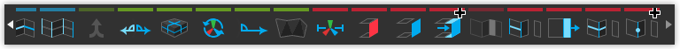
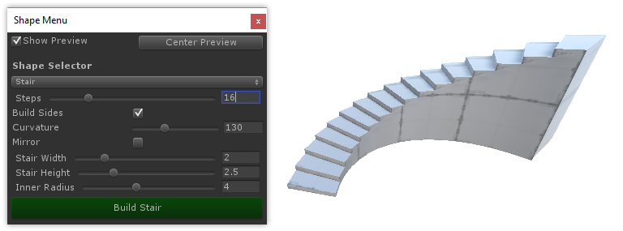

Video: ProBuilder Fundamentals
First time using ProBuilder? Start here for an overview of creating your first mesh, editing it's geometry, applying materials, and UV editing.

The ProBuilder Toolbar
All of ProBuilder's specialized editing functions are available via the ProBuilder Toolbar, which dynamically adapts to your Edit Mode and selection.

Each Toolbar button will display detailed information about it's use, options, and keyboard shortcuts, when hovered over. Viewing these is a great way to start learning ProBuilder's deeper functionality.
More Info: ProBuilder Toolbar
Creating a New Mesh
 Press
Press CTRL K on your keyboard to spawn in a new, default, ProBuilder-editable cube.
To start with a more complex shape, ProBuilder also includes a library of Shapes (cylinder, torus, stairs, etc), to begin modeling with. Which each of these Shapes, you can customize both starting dimensions and unique parameters.

More Info: Shape Tool
Editing Meshes
Object vs Element

ProBuilder is always in one of 2 major modes: Object or Element.
- Object Mode is standard Unity mode, no surprises.
- Element Mode activates ProBuilder's mesh editing features.
- Click in the Edit Mode Toolbar to change Mode, or use it's shortcut keys.
Elements are the individual parts that make up a mesh: Vertices, Edges, and Faces. If it helps, you can think of these like levels of detail on a map- for example, "city, state, country".
- Vertex Editing: Select and edit Vertices for detailed editing and functions like vertex splitting and connecting.
- Edge Editing: Select and edit Edges for semi-complex geometry editing, and Edge Loop Modeling techniques.
- Face Editing: Select and edit Faces on an object, performing basic tasks like deleting faces and extruding.
Element Selection and Manipulation
First, choose which Element type you'd like to edit, by clicking it's button in the Edit Mode Toolbar.
Then, use any of the standard Unity selection methods (click, drag, etc) and manipulation controls (move, rotate, scale), just as you would on any other object(s).
Building and Editing Complex Meshes
ProBuilder follows standard 3D modeling methods (and caveats), so experienced 3D artists can probably jump right in, after reading the ProBuilder Toolbar section.
For those seeking greater knowledge, we highly recommend viewing the 3D Modeling section. There, you can find:
- Step-by-step tutorials and videos
- Workflow suggestions
- Links to other useful sites, videos, etc
More Info: 3D Modeling
Texturing and UVs

Applying Materials
You can apply any material (including Substance, etc) to ProBuilder meshes, using standard "drag-n-drop" method or the Material Palette.
Materials can also be applied to individual faces of a ProBuilder mesh, while in Element Mode.
More Info: Material Tools
Editing UVs
ProBuilder includes both "Auto UVs" (default), and a complete Manual UV Editing and Unwrapping system.
Auto UV mode lets you tweak basics like Offset, Tiling, and Rotation, while ProBuilder handles the complex UV work automatically.
Manual UV mode enables complete control of the UVs, including Projection Mapping, UV Stitching, and more, similar to UV editors in major tools like 3DS Max, Blender, etc.
You may use whichever you prefer, or a mix of both, even on the same mesh.
More Info: Texturing and UVs